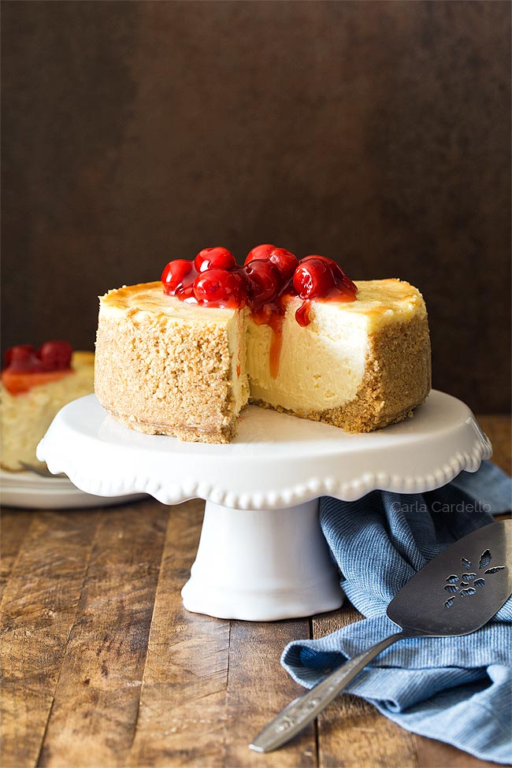

Go back
Cheesecake

Don't run away! This one isn't so bad. This cheesecake is lactose free. No, it's not vegan - I doubt there's a way to make vegan cheesecake, but at least you won't fall sick from the lactose.
Ingredients
- 4 block of lactose free cheese
- 1.5 cups of crushed graham cracker
- 1 tsp vanilla essence
- 0.5 cup sugar
- 4 eggs
- 3 tbsp melted butter
- Raspberry jam
Steps
- Leave eggs and cheese on the counter to come to room temperature
- Crush the graham cracker if you haven't already done so. Then mix in the melted butter.
- In a springform pan lined with parchment paper, pour the graham cracker and press down to form a solid base
- Bake at 350 F for 10 minutes. Then remove from oven and let cool. Leave the oven on and reduce heat to 325 F
- While the base is cooling, prepare the cheese filling. In a mixing bowl, start mixing the cheese on low speed.
- Add the eggs one at a time, then add the sugar and vanilla and mix on medium high until smooth
- Pour the cheese filling into the spring form pan and gently tap it down on the counter so it spreads evenly
- Bake for 40 minutes on the middle rack.
- Once baking is complete, turn off the oven and leave the cheesecake in the oven to cool slowly, leaving the oven door open a crack.
- After 30 minutes, open the oven door wider and let the cake continue to cool for another 30 minutes. This will keep it from cracking.
- Remove the cake from the oven and let sit on the counter until slightly warm, then transfer to the refrigerator to chill.
- Once chilled, top with raspberry jam and serve!
The End!